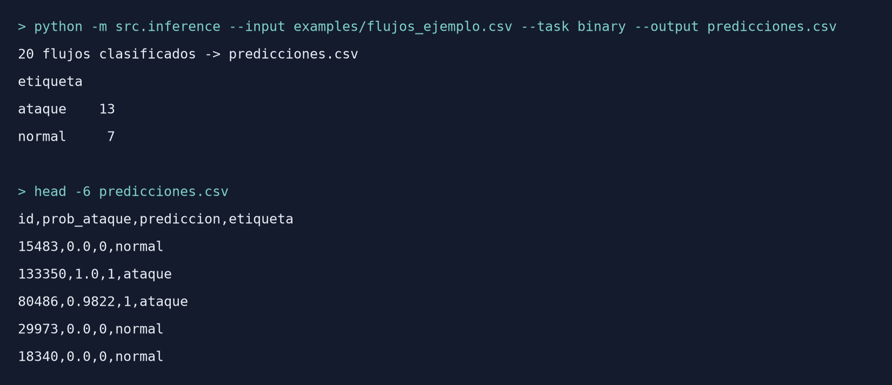
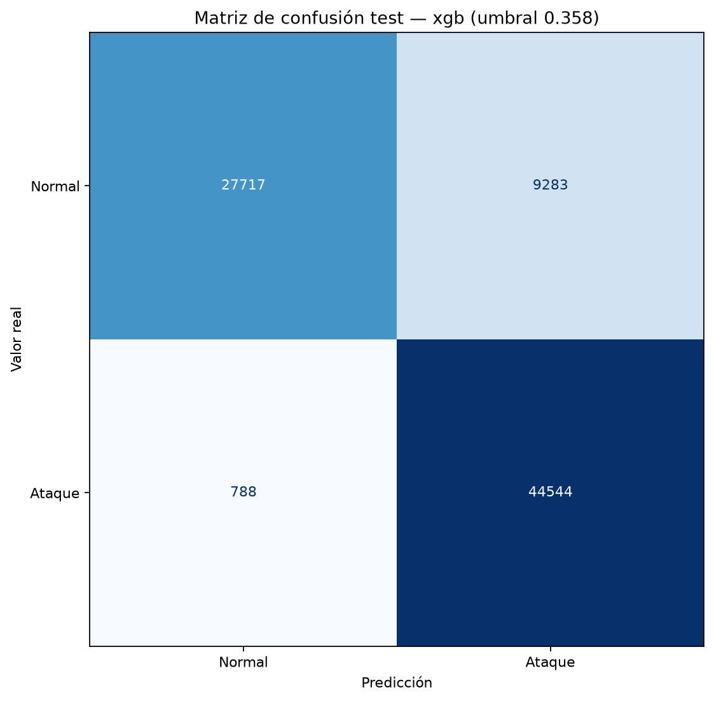
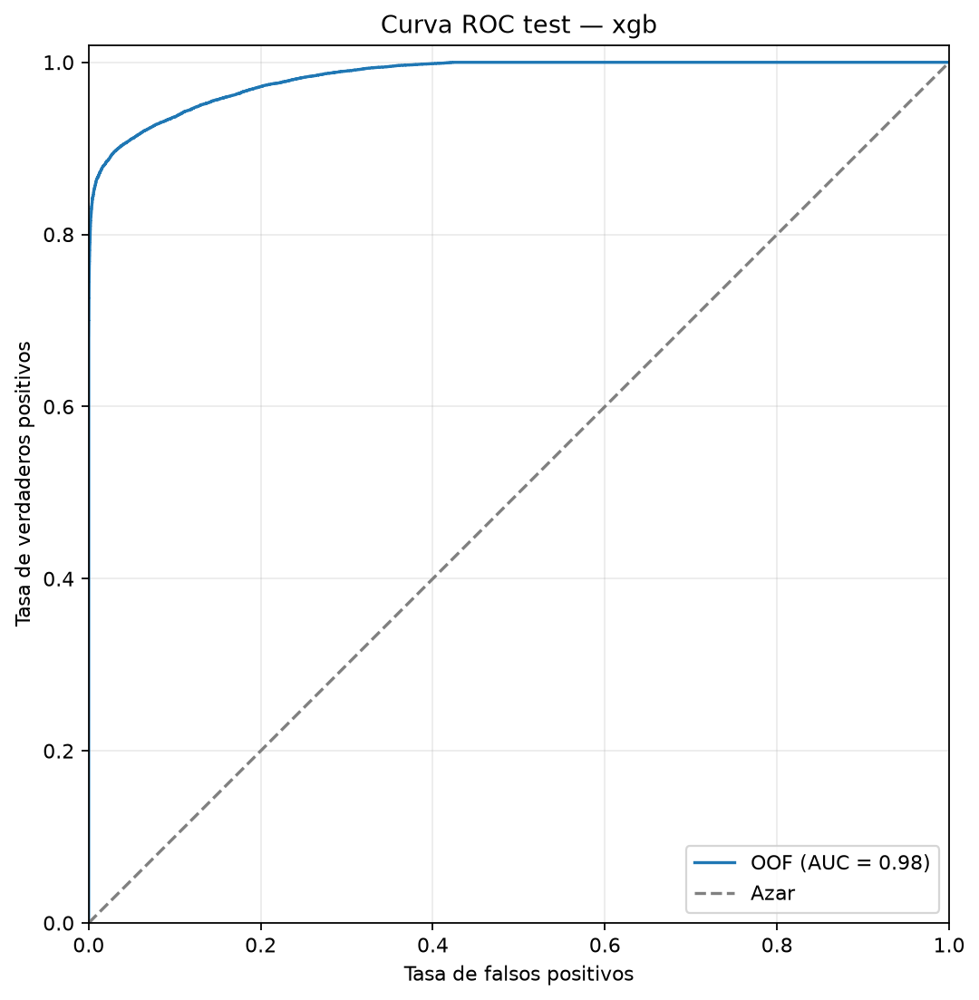
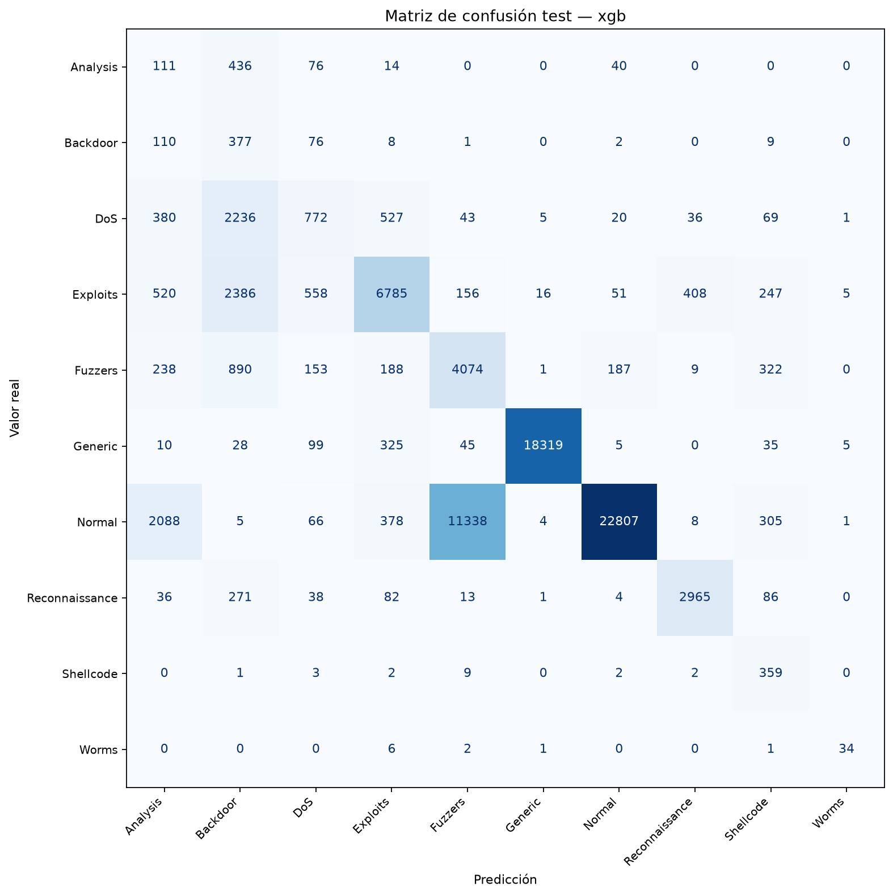

Detección de intrusiones en redes con Machine Learning
Un detector que clasifica flujos de red como tráfico normal o ataque, y el tipo de ataque, entrenado y evaluado sobre el dataset UNSW-NB15.
Un detector que clasifica flujos de red como tráfico normal o ataque, y el tipo de ataque, entrenado y evaluado sobre el dataset UNSW-NB15.
El sistema se usa desde la consola: recibe un CSV con flujos de red y devuelve, para cada uno, la probabilidad de que sea un ataque y la etiqueta final. Esta es la salida real con los 20 flujos de ejemplo del repositorio.

Los sistemas de detección de intrusiones tradicionales funcionan con firmas: reglas escritas a mano para ataques que ya se conocen. Nosotros entrenamos un modelo que aprende cómo se comporta el tráfico malicioso a partir de ejemplos etiquetados. Para cada flujo de red (protocolo, servicio, duración, bytes y paquetes de cada lado, TTL, etc.) decide si es normal o un ataque, y además predice el tipo de ataque entre 9 categorías.
Usamos el dataset público UNSW-NB15 con su división oficial en train y test. Comparamos una regla sin IA y una regresión logística contra XGBoost, validamos con cross-validation agrupando las filas repetidas y evaluamos cada modelo una sola vez sobre el test.
XGBoost detecta el 98,3 % de los ataques del test. Su tasa de falsas alarmas, en cambio, sube del 8 % en la validación al 25 % en el test: casi todas vienen de un sesgo del dataset en la variable TTL, que analizamos y documentamos en lugar de ajustar el modelo al test.
Tarea binaria sobre el test oficial (82.332 flujos), con XGBoost y el umbral elegido en el entrenamiento. La regla sin IA detecta el 65,8 % de los ataques y tiene un F1 de 0,733.


En la tarea multiclase, XGBoost llega a un Macro-F1 de 0,524 en el test, contra 0,352 de la regresión logística y 0,062 de la clase mayoritaria.
